< 사용법 >
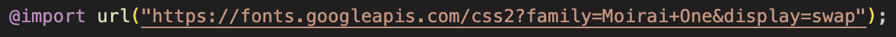< 결과 >
외부폰트 적용
< 사용과정 >
1. 폰트 다운로드(otf, ttf)
2. transfonter.org 사이트에서 변형(eot, ttf, woff, woff2, svg) 작업 진행
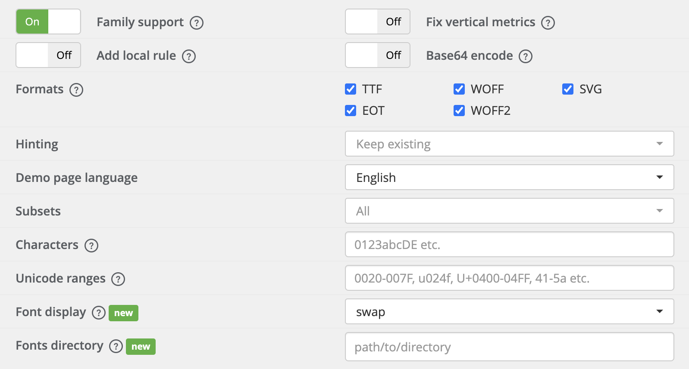3. 다운로드한 파일을 드래그 앤 드롭을 통해 넣어주고 convert를 해줌
4. convert가 진행된 후 download 버트을 눌러주면 아래 사진의 파일들이 들어있는 폴더가 생길 것
5. 그 폴더를 우리가 사용할 폴더 (ex. 03_폰트 폴더로) 드래그 앤 드롭을 해주면 사진처럼 표시가 될 것
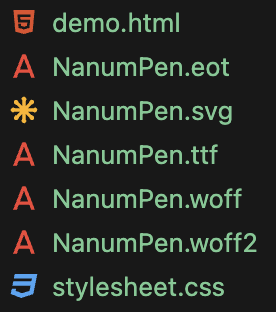6. 폴더 이름을 fonts로 바꾸기
7. fonts 폴더의 stylesheet.css에 @font-face가 있을텐데 그 내부의 url 경로를 내 경로에 맞게 바꿔줘야함.(ex. ../fonts/ 넣기)
< 사용법 >
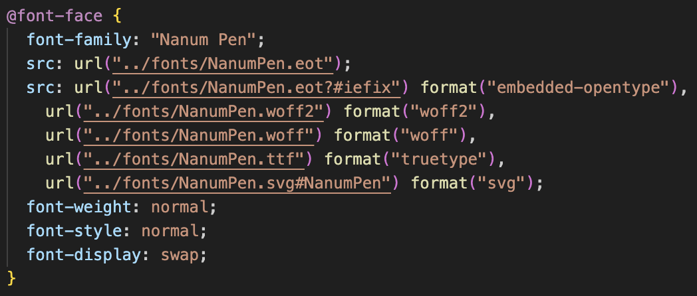< 결과 >
내부 폰트 적용
< 사용법 >
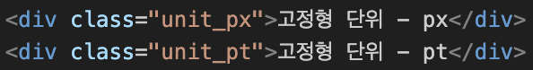< 사용법 >
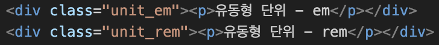유동형 단위 - em
유동형 단위 - rem
< 이유 >
전체적인 글씨의 크기가 커진 이유 : html에서 font-size를 30px로 했기 때문에 전체 영역의 폰트 크기가 커진거다. 그러나 고정형 단위는 앞에서 지정해준대로 그대로 20px인 것을 '검사' 창을 통해 확인해볼 수 있다.
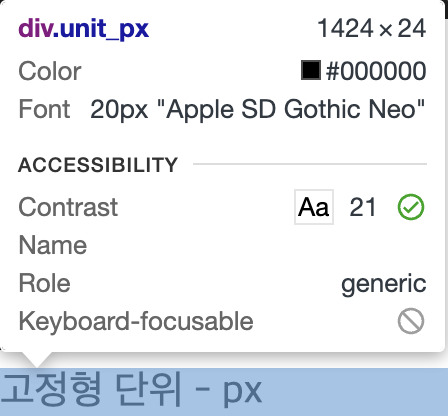< 사용법 >
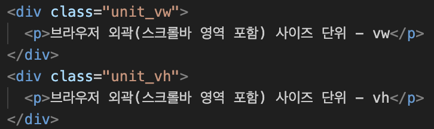브라우저 외곽(스크롤바 영역 포함) 사이즈 단위 - vw
브라우저 외곽(스크롤바 영역 포함) 사이즈 단위 - vh
< 설명 >
현재 실행중인 스크린 크기에 맞춰 상대적 크기를 반환하는 것
vw :
viewport width / vh : viewport height
< 사용법 >
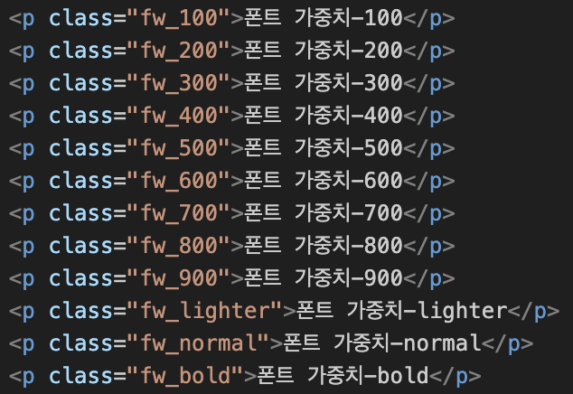폰트 가중치-100
폰트 가중치-200
폰트 가중치-300
폰트 가중치-400
폰트 가중치-500
폰트 가중치-600
폰트 가중치-700
폰트 가중치-800
폰트 가중치-900
폰트 가중치-lighter
폰트 가중치-normal
폰트 가중치-bold
< 사용법 >
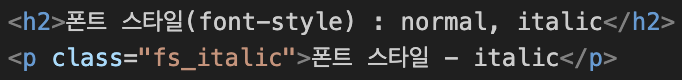폰트 스타일 - italic
< 사용법 >
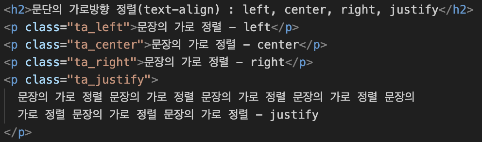문장의 가로 정렬 - left
문장의 가로 정렬 - center
문장의 가로 정렬 - right
문장의 가로 정렬 문장의 가로 정렬 문장의 가로 정렬 문장의 가로 정렬 문장의 가로 정렬 문장의 가로 정렬 문장의 가로 정렬 - justify
< 사용법 >
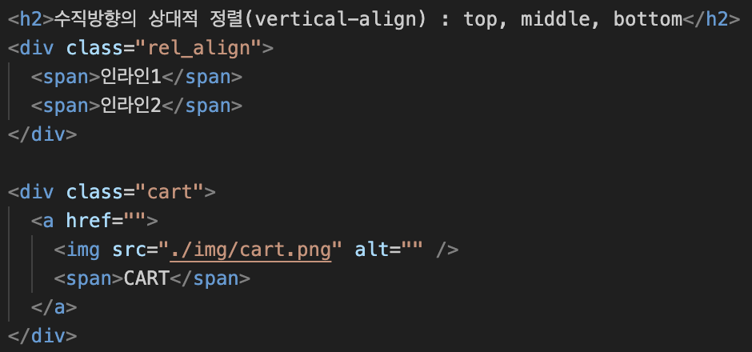< 사용법 >
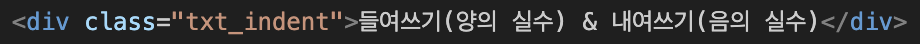< 사용법 >
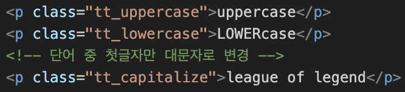uppercase
LOWERcase
league of legend
< 사용법 >
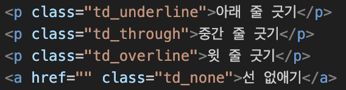아래 줄 긋기
중간 줄 긋기
윗 줄 긋기
선 없애기< 사용법 >
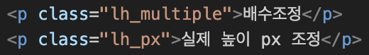배수조정
실제 높이 px 조정